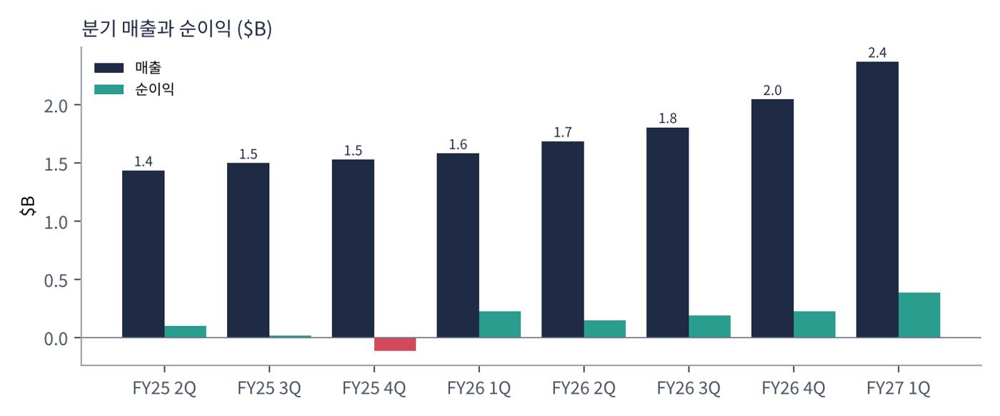
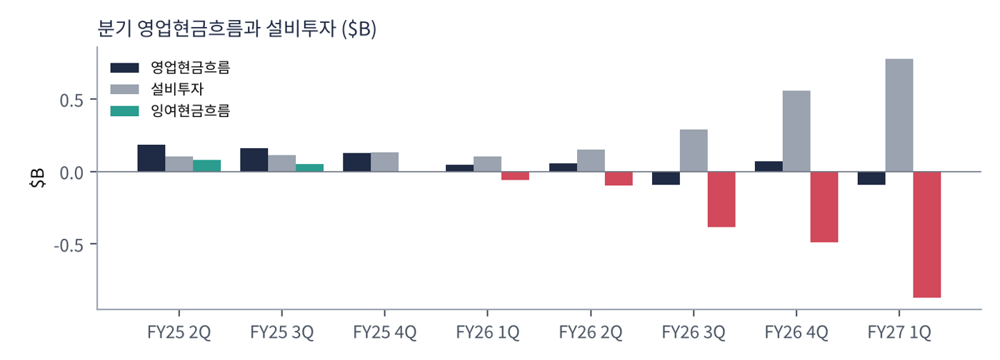
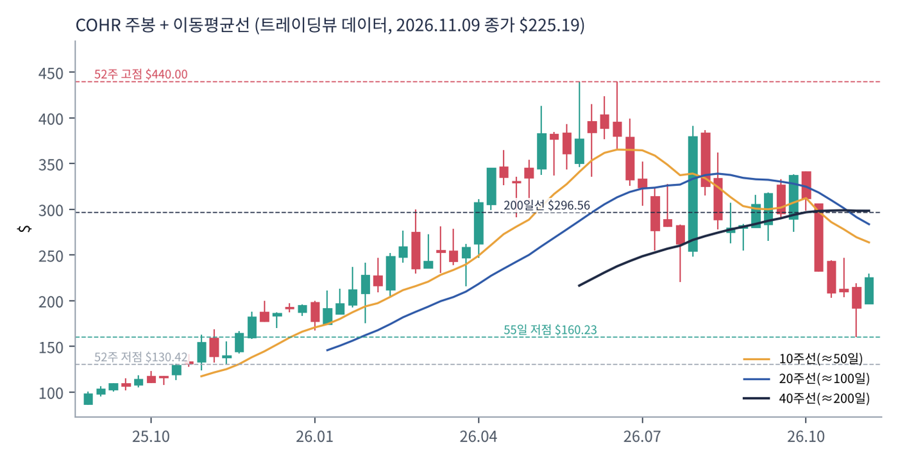
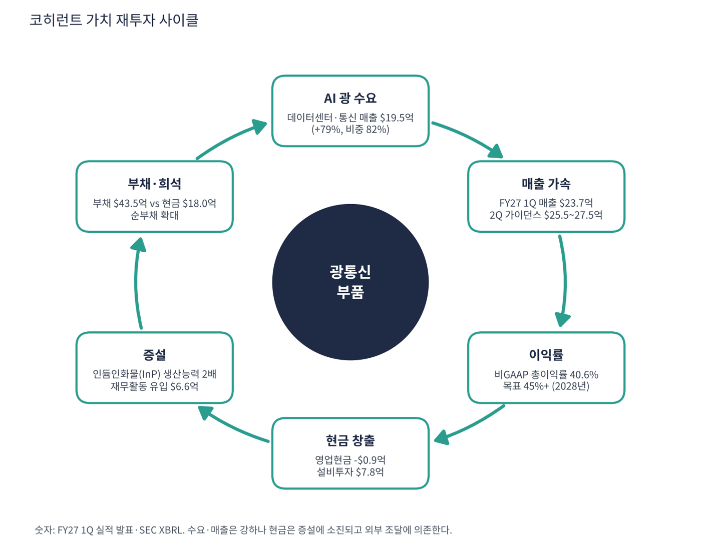

코히런트는 광통신 부품(트랜시버·레이저·광학소재)을 만드는 회사다. AI 데이터센터에서 GPU 사이를 잇는 고속 광 트랜시버와 그 핵심 소재인 인듐인화물(InP) 레이저를 직접 생산한다. 회계연도는 6월 종료다.
| 항목 | 내용 |
|---|---|
| 종목 | Coherent Corp (COHR) · NYSE · 광통신·레이저·소재 |
| 시가총액 | 약 $444억 · TTM PER 46.6배 · P/S 4.9배 · 11/9 종가 $225.19(+16.8%) |
| 최근 분기(FY27 1Q) | 매출 $23.7억, 비GAAP 총이익률 40.6%(GAAP 39.1%), GAAP EPS $1.90, 비GAAP EPS $2.09, 순이익 $3.85억 |
| 사업부 | 데이터센터·통신 $19.5억(+79%, 매출의 82%), 유사 합산 기준 매출 +56% |
| 2Q 가이던스 | 매출 $25.5~27.5억, 비GAAP EPS $2.28~2.48, 총이익률 40~42% |
| 중기 목표 | FY27 합산 성장 60%+, FY27 말 분기 $30억, FY28 분기 $40억, 2028 말 비GAAP 총이익률 45%+ |
| 직책 | 인물 | 역할·특징 |
|---|---|---|
| CEO | 짐 앤더슨 | AI 광 수요에 맞춰 생산능력을 급속 확대하는 전략 주도 |
| CFO | 셰리 루터 | 증설 자금 조달과 재무구조 담당 |
경영 스타일: '수요를 먼저 잡고 현금은 조달로 메운다'. 분기 설비투자가 $1.1억에서 $7.8억으로 7배가 됐고 영업현금은 마이너스다. 부족분은 차입·증자로 채운다(재무활동 유입 $6.6억).
트랜시버의 핵심 부품인 InP 레이저를 직접 만들어 공급 병목을 줄이고 원가를 낮춘다.
1.6T 이상 고속 트랜시버로 GPU 클러스터 연결 수요를 흡수하려 한다.
| 분기 | 매출 | 영업이익 | 영업이익률 | 순이익 | EPS | 영업현금 | FCF(영업현금-설비투자) | 특이 사항 |
|---|---|---|---|---|---|---|---|---|
| FY25 2Q | $14.3억 | – | – | $1.0억 | 0.44 | $1.9억 | +81 | |
| FY25 3Q | $15.0억 | – | – | $0.2억 | -0.11 | $1.6억 | +51 | |
| FY25 4Q | $15.3억 | – | – | -$1.1억 | -0.81* | $1.3억 | -1 | |
| FY26 1Q | $15.8억 | – | – | $2.3억 | 1.19 | $0.5억 | -58 | |
| FY26 2Q | $16.9억 | – | – | $1.5억 | 0.76 | $0.6억 | -96 | |
| FY26 3Q | $18.1억 | – | – | $1.9억 | 0.97 | -$0.9억 | -384 | |
| FY26 4Q | $20.5억 | – | – | $2.2억 | 1.20* | $0.7억 | -486 | |
| FY27 1Q | $23.7억 | – | – | $3.9억 | 1.90 | -$0.9억 | -869 | InP 증설, 순이익 $3.85억 |
EPS는 희석 주당순이익(GAAP, SEC 제출 자료 기준)이다. *는 4분기를 '연간 EPS − 1~3분기 합'으로 계산한 근사치라 실제 발표값과 다를 수 있다.


흐름 요약: 매출이 FY25 2Q $14.4억에서 FY27 1Q $23.7억으로 1.65배가 됐다. 순이익은 $1.0억에서 $3.85억이다. 반면 FCF는 $0.8억에서 -$8.7억으로 악화됐다. 최근 4분기 FCF 합계는 약 -$16.5억이다. 이 회사의 핵심 위험은 이익이 아니라 현금이다.
영업이익 시계열은 이번 수집에서 확보하지 못해 표에서 '–'로 두었다. 일부 분기 순이익은 영업외 손익의 영향을 받을 수 있다.
| 부문 | FY27 1Q 매출 | 비중 | 특징 |
|---|---|---|---|
| 데이터센터·통신 | $19.5억 | 82% | 전년 대비 +79%, AI 트랜시버 |
| 기타(산업·소재·레이저 등) | $4.2억 | 18% | 역산 값 |
기타 부문 금액은 전체에서 데이터센터·통신을 뺀 역산이다. 매출의 8할이 AI·통신 광 부품이므로 하이퍼스케일러 설비투자에 크게 연동된다.
코히런트가 가려는 곳은 AI 클러스터의 광 인터커넥트 핵심 공급자다. 레이저부터 트랜시버까지 수직 계열화해 병목을 쥐는 전략이다.
| 축 | 내용 |
|---|---|
| 생산능력 | InP 생산능력 2배, 분기 설비투자 $7.8억 |
| 제품 | 1.6T급 이상 고속 트랜시버 |
| 수익성 | 비GAAP 총이익률 45%+ (2028 말) |
| 규모 | 분기 매출 $30억(FY27 말) → $40억(FY28) |

| 이동평균 | 값 | 종가 대비 | 해석 |
|---|---|---|---|
| 5일선 | $198.07 | +13.7% | |
| 20일선 | $224.50 | +0.3% | |
| 50일선 | $268.94 | -16.3% | |
| 100일선 | $294.34 | -23.5% | |
| 200일선 | $296.56 | -24.1% | $296.6, 현재가 +32% 위 |
11/9 종가 $225.19는 52주 고점 $440.00의 51% 수준, 52주 저점 $130.42 대비 +73%다. 1·3·6·12개월 수익률은 -28%·-31%·-41%·+41%. 연중 고점에서 조정을 받다가 11/9에 하루 +16.8% 급반등했다. 200일선($296.6)과 55일 고점($341.8)은 아직 멀다.
트레이딩뷰 차트에서 사용자가 직접 그린 작도는 포함하지 않았고, 이동평균·돈키언 등 지표는 일봉 데이터로 직접 계산했다.
| 규칙 | 기준 | 현재 값 | 신호 |
|---|---|---|---|
| 장기 추세 필터 | 종가 vs 200일선 | $225.19 < $296.56 | 매도 |
| 중장기 교차 | 50일선 vs 200일선 | $268.94 < $296.56 | 매도 |
| 단기 교차 | 20일선 vs 50일선 | $224.50 < $268.94 | 매도 |
| 돈키언 채널 | 55일 고가 $341.76 / 저가 $160.23 | 중간값 $251.00 아래 | 매도 |
| 1개월 모멘텀 | 21거래일 수익률 | -28.0% (기준 $312.62) | 매도 |
| 3개월 모멘텀 | 63거래일 수익률 | -31.5% (기준 $328.57) | 매도 |
| 6개월 모멘텀 | 126거래일 수익률 | -40.7% (기준 $379.69) | 매도 |
| 12개월 모멘텀 | 252거래일 수익률 | +41.4% (기준 $159.30) | 매수 |
| 종합 (8개 평균) | -0.75 | 강한 매도 |
해석: 점수 -0.75(강한 매도). 단기 지표 일부가 매수로 돌아섰으나 장기 이평선은 모두 아래다. 14일 ATR $22.54 (10.0%).
| 가격 | 무엇이 바뀌나 | 의미 |
|---|---|---|
| $296.56 | 200일선 회복 시 장기 신호 매수 전환 | 점수 ±0.25 |
| $251.00 | 돈키언 중간값(55일 고·저점 평균) | 채널 신호 전환선 |
| $224.50 | 20일선 이탈 시 단기 교차 약화 | 단기 추세 신호 |
| $160.23 | 55일 저점 이탈 시 하락 추세 확정 | 손절 판단 기준 |
| 구분 | 가격 | 근거 |
|---|---|---|
| 저항 2 | $268.94 | 50일선 |
| 저항 1 | $251.00 | 돈키언 중간값 |
| 지지 1 | $224.50 | 20일선 |
| 지지 2 | $198.07 | 5일선 |
FCF가 -$18억이므로 금액을 줄이고 두 번으로 나눠 매수한다($190~225, 계획 금액의 각 20%). 55일 저점 $160.2 이탈 후 종가 $158 이하면 손절한다. 1차 $297(200일선), 2차 $342(55일 고점)에서 익절한다. 하루 +16.8% 직후라 추격은 피한다. 확인 신호는 영업현금 흑자 전환, 2Q 가이던스 달성, 자금 조달 조건이다. 가격대는 내 시나리오이며 매매 권유가 아니다.
| 악재 요인 | 내용 | 강도 |
|---|---|---|
| 현금 소진 | TTM FCF -$18억, 영업현금 마이너스, 런웨이 단기 | 높음 |
| 부채·희석 | 순부채 $25.5억, 증설 자금 외부 의존 | 높음 |
| AI 설비투자 둔화 | 매출 82%가 데이터센터·통신 | 중간 |
| 경쟁·가격 | 트랜시버 업체 간 가격 경쟁 | 참고 |
| 티커 | 회사 | 시가총액 | PER(TTM) | PEG | P/S | EPS 성장(YoY) |
|---|---|---|---|---|---|---|
| COHR | 코히런트 | $44B | 46.6배 | 0.07 | 4.93배 | +596% |
| VRT | 버티브 | $77B | 37.5배 | 0.34 | 5.47배 | +102% |
| AVGO | 브로드컴 | $1,525B | 40.8배 | 0.37 | 16.11배 | +100% |
| NVDA | 엔비디아 | $4,306B | 22.6배 | 0.19 | 14.96배 | +125% |
| MRVL | 마벨 | $136B | 50.9배 | – | 13.76배 | – |
| TXN | 텍사스인스트루먼트 | $270B | 38.4배 | 0.89 | 12.30배 | +41% |
직접 경쟁사(루멘텀·시에나·인노라이트 등)는 데이터를 확보하지 못했다.
코히런트는 이익은 나지만 현금은 마이너스다. 점검 핵심은 런웨이(현금으로 버틸 수 있는 기간)와 P/S다.
| 지표 | 값 | 계산·출처 | 해석 |
|---|---|---|---|
| 영업현금 (FY27 1Q) | -$0.93억 | SEC 분기 | 순이익 $3.85억과 괴리 |
| 설비투자 (FY27 1Q) | $7.76억 | SEC 분기 | 1년 전 대비 5배 |
| 잉여현금흐름 (TTM) | -$18.3억 | 트레이딩뷰 | 증설 투자 때문 |
| 현금 / 총부채 | $18.0억 / $43.5억 | 트레이딩뷰 | 순부채 $25.5억 |
| 런웨이 | 약 3.3개월 분기 속도 기준 | 현금 $18.0억 ÷ 월 FCF 약 $-2.9억(최근 분기 -$8.7억 ÷ 3) | 외부 조달 없이는 짧다. 재무활동 유입 $6.6억이 메우는 중 |
| 기준 | 매출 | P/S | 비고 |
|---|---|---|---|
| 트레이딩뷰 표시값 | $79.1억 | 4.9배(표시) / 5.6배(계산) | 시총 $444억 ÷ $79.1억 = 5.6배, 표시값과 차이는 기준일 차이로 추정 |
| 최근 4분기(SEC) | $82.1억 | 5.4배 | — |
| 2Q 가이던스 연환산 | $106억 | 4.2배 | $26.5억×4, 내 계산 |
| 동종 | – | – | 버티브 5.5, 엔비디아 15.0, 브로드컴 16.1 (11/9) |
런웨이와 연환산은 내 계산이며 회사 전망이 아니다. 외부 조달(차입·증자)을 가정하지 않은 단순 계산이다.
| 지표 | 값 | 판정 |
|---|---|---|
| EBITDA (TTM, 트레이딩뷰) | $17.4억 | 흑자 |
| EBITDA 마진 | 약 22% | $17.4억 ÷ $79.1억 |
| 순부채 / EBITDA | 약 1.5배 | $25.5억 ÷ $17.4억 |
| EV/EBITDA | 약 25.8배 | (시총 $444억 + 순부채 $25.5억) ÷ $17.4억 |
| 방식 | PER | EPS 성장률 | PEG | 판정 |
|---|---|---|---|---|
| 트레이딩뷰 (TTM) | 46.6배 | +596% | 0.07 | 적극 매수 |
| 2Q 가이던스 연환산 (비GAAP $2.38×4) | 23.7배 | +60% 가정 | 0.40 | 적극 매수 |
| 보수 (+30% 가정) | 23.7배 | +30% | 0.79 | 투자 적격 |
| 스트레스 (+15% 가정) | 23.7배 | +15% | 1.58 | 기준 초과 |
판정: 형식상 PEG 0.07은 왜곡이다. 596% 성장은 기저 효과(직전 TTM에 손실 분기 포함)다. 가이던스 연환산 기준 PEG 0.40(성장 60% 가정)은 '적극 매수' 범위지만 성장이 15%로 꺾이면 1.58이다. 가정은 내 추정이다. PEG가 낮아도 FCF가 -$18억이므로 PEG만으로 투자 적격이라고 볼 수 없다.

코히런트 사이클은 AI 광 수요 → 매출 → 이익률 → 현금 → 증설 → 부채다. 앞단은 강하지만 현금과 부채 고리가 약하다.
| 고리 | 현재 숫자 | 고리 강도 | 약해지는 신호 |
|---|---|---|---|
| ① AI 광 수요 | 데이터센터·통신 $19.5억(+79%) | 강함 | 하이퍼스케일러 투자 둔화 |
| ② 매출 전환 | $23.7억, 2Q $25.5~27.5억 | 강함 | 가이던스 하회 |
| ③ 이익률 | 비GAAP 40.6%, 목표 45%+ | 개선 중 | 증설 초기 가동률 부담 |
| ④ 현금 창출 | 영업현금 -$0.9억 | 약함 | 운전자본 증가 |
| ⑤ 증설 | 설비투자 $7.8억, InP 2배 | 투자 | 수요 둔화 시 과잉설비 |
| ⑥ 부채 | 순부채 $25.5억 | 약함 | 금리·희석 |
구조: ①②는 강하고 ④⑥이 약하다. 증설이 끝나 가동률이 오르는 시점에 현금이 돌아서는지가 관건이다.